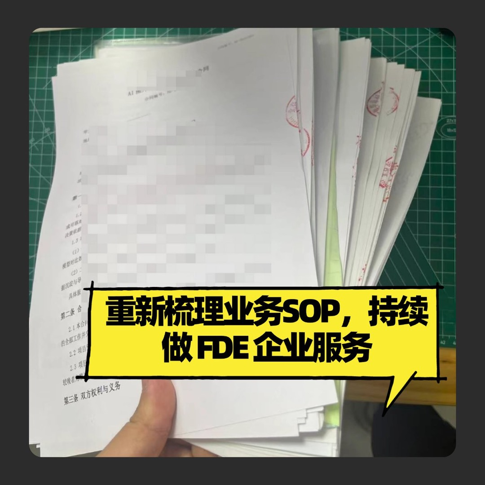
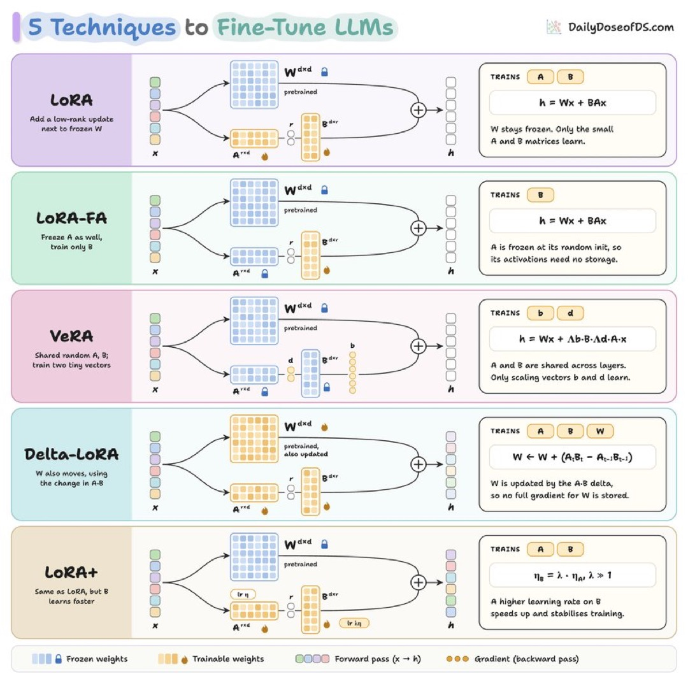
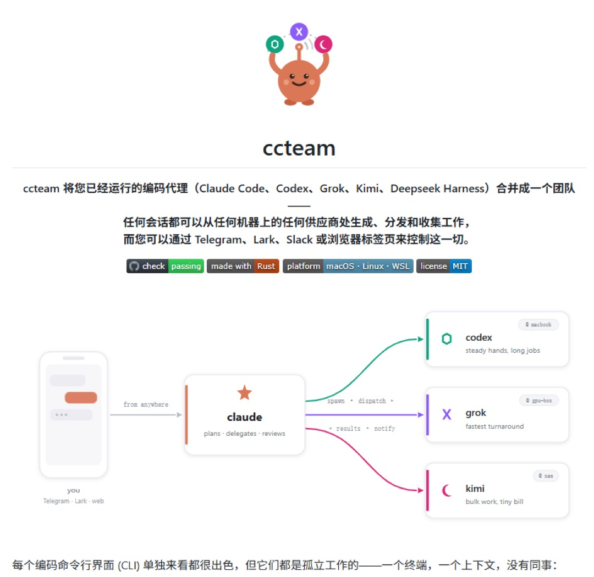

本期速览
01 AI智能体挖出Chrome零日漏洞
02 FDE项目报价与分期交付方法
04 ccteam编排多AI编程agent协作
05 wxa-runner浏览器运行微信小程序
06 Pre-commit拦截AI写的超大文件
01｜AI智能体挖出Chrome零日漏洞
来源（X） · @wangwei3701 · 2026-10-19 22:41
最离谱的是这笔账的投入产出比：这群研究员没日没夜让 AI 智能体在沙盒里自己试错，硬生生找出了 3 个连谷歌自家工程师都没发现的未知零日漏洞（Zero-Days），还把这 3 个漏洞串成了一条完整的攻击链。谷歌核实完当场认栽，乖乖掏出最高档的 25 万美刀奖金，扣除 4 万刀电费和算力成本，6 天净赚 21 万美刀。
以前大家问“怎么用 AI 搞钱”，网课导师全在教你去二手平台接 9 块 9 的改图单；结果真正的硬核玩家，已经派 AI 去硅谷大厂的金库里合法拿赏金了。🤣这才叫玩转AI~
如果给你一套这么聪明的智能体，你最想派它去帮你攻克什么难题？
02｜FDE项目报价与分期交付方法
来源（X） · @weiyong_wang · 2026-10-18 23:02
感谢@ai_xiaomu、@jinchenma_ai、@AdrianPunk115、@rwayne、@isnail、@AI_jacksaku、@wangdefou
几位老师助力冷启动
接下来唯庸会继续分享基于我过往经验所得出的一些血泪验证😂期望对大家的业务与opc发展有所帮助，感谢支持🙏
引用内容
唯庸 @weiyong_wang
24 年我从字节 seed 项目组离职 all in ai。就是去做那些你们知道的那些 lowb 智能体。
干的事情，现在有个草蛋的名字叫 FDE。
一开始我觉得给企业做 AI 落地就是个体力活：企业有一堆重复的工作，梳理一下流程，把模型接进业务，东西交出去就完事。
这种梳理业务需求并沉淀成SOP，围绕工作场景制作提效的工作，对我来说是非常轻车熟路的，因为过往就持续在做企业内部的工具提效。
于是 25 年下半年在郑州组了团队，在闲鱼、淘宝、视频号批量接几千到一两万的小单。几个月做了 200 个智能体，营收轻松过百万。
结果年底坐下来一算账，渠道拿走三四成，交付成本三四成，再扣掉税和房租，到手不到 10%。要不是另外还有企业服务撑着，这条线早就暴毙了。一个互联网生意，硬是做出了制造业的利润率。
比钱更磨人的是精力。店铺做到了全网头部，可整个盘子每天就那么点流量，需求并没有预想的井喷，AI圈子的从业者也处在自己的信息茧房。
每天大半时间花在筛线索、聊需求、给客户科普 AI 上。几千块的单子，该踩的坑一个不少。最后这条线直接砍掉，账户剩下的钱发了工资，固定资产挂闲鱼，之后专心做企业级的交付。
这一年下来我才明白，技术反倒最好解决，真正难的是信任。你一个外人要进人家的流程，人家得先信你，才肯把流程、资料、员工交给你。所以一定要直接跟老板谈，老板信不信你，决定了项目推不推得动。很多企业还停在豆包时代，流程没理过，资料散得到处都是，你连 AI 该插在哪一步都找不到，前一半时间其实是在帮人补课。
我们干的这类活，现在有了个舶来词：FDE。这个词火了以后，挂这个名字的人一下多了：有做实施外包换了个名字的，有想借它积累垂直场景经验的创业团队，也有拿它包装工具培训课的。叫什么其实不重要，客户只在乎你能不能交付结果。
FDE 大概就两条路。以我们之前的小工作室为原点，往下，一个人走 OPC，时间被切得稀碎，很难做复杂的专业项目；往上，靠资金和规模硬扛前期亏损，通过优化流程降低成本，同时攒流量侧的线索，等市场起来。能扛过去的人太少，去年大量团队就是从中间往下滑的。
领先半步是先进，领先一步是先烈。企业 AI 化还处在初级阶段，这个阶段还会持续很久。
所以我们现在还在做企业交付，同时给自己定了个规矩：项目金额控制在 20 万以内，交付周期一个月以内。20 万封顶，项目就复杂不到哪去；一个月左右的工期，保证团队不会陷进泥潭。
具体报多少又是个难题：报高了客户掉头就走，报低了自己白干。
好多朋友，包括我的学员，都来问我项目怎么报价。不会报价，一般就两个原因。
一个是真的不知道。项目多复杂、要用什么技术，你心里没底，估不出要干多久。这种要么别接，要么找个靠谱的工程师让他来报。另一个是贪心：成本心里有数，又想把这一单吃满，反而不知道报多少合适。
我一开始是第二种。
后来想明白一个笨办法。
你肯定知道自己的总成本（人力、渠道、税、房租都算上）是多少吧。那就别先想利润最大化，成本上加 20% 到 30%，先保证不亏。剩下的，靠项目喂。接得多了，什么行业什么价，你心里就有数了。不同行业利润率不一样，利润高的就敢报高。
怎么算，三种方法。
第一种是按人天。这是最常规的报法，前提是你估得出技术难度。
比如客户要一个内部系统，有用户端和管理后台，还要支持飞书登录。一个产品经理，两个研发各出半个人力，一前一后，干一个月。产品 300 一天，开发 600 一天，一个月 20 个工作日，人力成本 1.8 万。人力成本按占报价四成倒推，1.8 万除以 40% 是 4.5 万，留点余量，报 5 万。剩下那六成，渠道、税、房租和利润都在里面。要是自己接单自己做，报价还能往下压，前期用低价积累案例和经验。
第二种按交付物。项目拆成几段，每段估一个，最后加总，这种最稳。
比如一个实验性的 AI 项目，得先验证模型在客户的业务里能不能达标，比一比不同模型的效果和成本，验证完才能开发、改造现有流程。这种就直接拆成两段。第一段做模型验证，交付一份验证报告，收 5000；验证通过，第二段再做开发，按产品结果交付，收 2 万。模型达不到标准，后面就不做了，客户只花了验证的钱，你也没白干。有先后关系的项目，最好都这么拆。
第三种是缩小范围，用在你报不出来的时候。报不出来不是报价技巧的问题，是这个项目已经超出你的把控了。这时候别硬憋一个数，从一个小点切进去。
比如客户一上来就要一套贯穿全业务流程的 AI 方案，老板一口气说了好几个幻想。这时候别被需求拉着跑，其他的先放一放，挑一个马上能见效、AI 又确实擅长的点先做，也就是后面说的第一期。别嫌项目小，利润率比项目金额重要。只有做出结果，才会有信任，后面几期才谈得下去。
还有个容易吃亏的地方是收款：钱别包在一块。一般拆个两到三笔款，通常是 5:4:1 或者 4:4:2。首付款不能低于 40%，因为开发成本就占四成。万一半路客户跑单，或者项目出问题，首付款得能盖住工程师的投入，还有上下游合作伙伴的付出。尾款只留一两成，就算最后收不回来，损失也有限。
我现在维护的客户，基本都已经是第二三次合作了。
第一期，2 到 3 万，控制在 5 万以内。第二期，7 万到 8 万，高的到 10 万。第三期，十几万，最多到 20 万。
都是一期一期谈进去的，不是一次谈成。每次都得把上一次的结果交到对方手里，才谈下一步。客单价看着不高，其实是按客户能扛的风险算。经济下行，没人愿意为一个尝试先扔几十万，老板是最抠的人，因为只有自己开过公司，才知道哪儿哪儿都是成本，都是花销。第一期收的从来不是交付费，是信任费。
另外还有两笔账很多人没算。
第一笔，算力别打包进固定费用。服务器数据库是固定的，算进报价没问题。但模型调用是波动的，这个月一千，下个月客户量上来可能一万，合同里得把算力成本写清楚。做法是报价里含一部分调用测试额度，超出部分客户自己充值。
第二笔，报价别只算写代码的部分。从设计到运维，需求沟通、资料整理、原型确认、测试、部署、问题修复、试运行支持，都要算进去，这些加起来才是你不亏的底线。AI 项目常见的情况是开发三星期，调优三个月，报价时就得把调优的时间算进去，免得后面的成本全落在自己身上。
FDE 新手最常见的错误不是报错价，是还没收钱就把方案做完了。
客户说“你先帮我看看”。一看就成了访谈，接着方案就出来了，客户拿着方案走了，项目没签，你白干一星期。
活要拆开卖。诊断是诊断的价，方案是方案的价，部署是部署的价。
能对结果负责，就有底气谈价值定价。
如果你对我现在做的事感兴趣，或者在企业 AI 落地过程中有困惑，欢迎来链接。

03｜PEFT五种参数高效微调技术
来源（X） · @_avichawla · 2026-10-19 17:12
中文译文
我做 LLM 微调已经超过 3 年了。
以下是 5 种 LLM 微调技术，配有可视化图解：
传统微调对 LLM 来说不切实际（数十亿参数；数百 GB）。
由于这种算力并非人人都能获得，参数高效微调技术（PEFT）应运而生。
在深入了解每种技术的细节之前，先提供一些背景知识，帮助你更好地理解这些技术：
LLM 的权重是在微调过程中被调整的数字矩阵。
大多数 PEFT 技术涉及寻找这些矩阵的低秩适配，即一个维度更小的矩阵，但仍然能够表示原始矩阵中存储的信息。
现在我们对矩阵的秩有了基本的了解，就可以很好地理解各种微调技术了。
（每种技术的可视化解释请参阅下方图片）
1）LoRA
- 在权重矩阵旁边添加两个低秩可训练矩阵 A 和 B。
- 不对 W 进行微调，而是调整这些低秩矩阵中的更新。
即使是最大的 LLM，LoRA 矩阵也只占用几 MB 的内存。
2）LoRA-FA
虽然 LoRA 显著减少了总可训练参数量，但它需要大量的激活内存来更新低秩权重。
LoRA-FA（FA 代表 Frozen-A，即冻结 A）冻结矩阵 A，仅更新矩阵 B。
3）VeRA
- 在 LoRA 中，低秩矩阵 A 和 B 对每一层都是唯一的。
- 在 VeRA 中，A 和 B 是冻结的、随机的，并且在所有层之间共享。
- 作为替代，它学习的是层特定的缩放向量（b 和 d）。
4）Delta-LoRA
- 它也对矩阵 W 进行调优，但不是以传统的方式。
- 这里，两个连续训练步骤中矩阵 A 和 B 乘积之间的差值（或 delta）被添加到 W 中。
5）LoRA+
- 在 LoRA 中，矩阵 A 和 B 使用相同的学习率进行更新。
- LoRA+ 的作者发现，为矩阵 B 设置更高的学习率会导致更好的收敛效果。
____
关注我 → @_avichawla
每天，我分享关于数据科学、机器学习、LLM 和 RAG 的教程与见解。
原文
I have been fine-tuning LLMs for over 3 years now.
Here are 5 LLM fine-tuning techniques, explained with visuals:
Traditional fine‑tuning is impractical for LLMs (billions of params; 100s of GB).
Since this kind of compute isn't accessible to everyone, parameter-efficient fine-tuning techniques (PEFT) were built.
Before we go into details of each technique, here's some background that will help you better understand these techniques:
LLM weights are matrices of numbers adjusted during fine-tuning.
Most PEFT techniques involve finding a lower-rank adaptation of these matrices, a smaller-dimensional matrix that can still represent the information stored in the original.
Now with a basic understanding of the rank of a matrix, we're in a good position to understand the different fine-tuning techniques.
(refer to the image below for a visual explanation of each technique)
1) LoRA
- Add two low-rank trainable matrices, A and B, alongside the weight matrices.
- Instead of fine-tuning W, adjust the updates in these low-rank matrices.
Even for the largest LLMs, LoRA matrices take up a few MBs of memory.
2) LoRA-FA
While LoRA significantly decreases the total trainable parameters, it requires substantial activation memory to update the low-rank weights.
LoRA-FA (FA stands for Frozen-A) freezes matrix A and only updates matrix B.
3) VeRA
- In LoRA, low-rank matrices A and B are unique for each layer.
- In VeRA, A and B are frozen, random, and shared across all layers.
- Instead, it learns layer-specific scaling VECTORS (b and d) instead.
4) Delta-LoRA
- It tunes the matrix W as well, but not in the traditional way.
- Here, the difference (or delta) between the product of matrices A and B in two consecutive training steps is added to W.
5) LoRA+
- In LoRA, both matrices A and B are updated with the same learning rate.
- Authors of LoRA+ found that setting a higher learning rate for matrix B results in better convergence.
____
Find me → @_avichawla
Every day, I share tutorials and insights on DS, ML, LLMs, and RAGs.

04｜ccteam编排多AI编程agent协作
来源（X） · @bkdgiffug · 2026-10-19 22:36
我刨到个开源项目ccteam，能把你手上正跑的几个AI编程agent凑成一支队伍，谁擅长啥它心里门儿清：
1️⃣ Claude Code琢磨得最透，管拆活儿、立规矩
2️⃣ Codex扛得住长任务，闷头写代码不掉链子
3️⃣ Grok答得最快，边上随手解个疑
4️⃣ Kimi便宜量大，重复的脏活累活全兜着
最邪乎的是遥控。绑个Telegram或者Lark的bot，后半夜把活儿一派，合上电脑走人，第二天吃早饭时结果已经躺在群里了，合不合并还给你备好approve、deny两个按钮。跨机器也成，NAT后头那台破笔记本照样能当卫星节点，测试直接甩到GPU机器上跑。
哪个session都能自己招呼人干活，spawn、dispatch、collect全在底下悄没声地跑通了。它不替你拿主意啥时候派活，这事儿写在你自个儿做了版本管理的prompt里。
想试的自己瞧：
🔗 https://github.com/firstintent/ccteam

05｜wxa-runner浏览器运行微信小程序
来源（X） · @realchendahuang · 2026-10-19 20:36
如果想让 AI 快速调试开发，能在浏览器里直接跑微信小程序，那就太方便了。
这个项目就实现了这个功能。直接在浏览器里跑官方基础库，支持 Chrome DevTools 调试，原生、uni-app 和 Taro 通用。
github：https://github.com/open-wxa/wxa-runner
06｜Pre-commit拦截AI写的超大文件
来源（X） · @vikingmute · 2026-10-19 20:50
它不仅仅写在 Agents .md 里面，而是也要写到不需要 AI 的硬性要求中，因为有时候 agent 是不会自觉的。
有很多朋友也许在说：现在都没人看代码了写大文件有什么问题吗？我自己实践过： agent 特别容易把文件写得又大又杂，上下文窗口是有限的，一个文件塞太多，后面再改它时 agent 只能看到一部分 漏改 重复改就都来了。
我遥想之前有当年，某模型直接写了一个小一万行的代码，发现后来他根本就改不好了，各种 bug 和乱改。所以小文件绝对是必要的。
引用内容
Matt Pocock @mattpocockuk
中文译文
今日提示：
创建一个 pre-commit 钩子，阻止超过 5,000 token 的文件。Token = 字节数/4。
仅对已暂存（staged）的文件运行。忽略非 agent 编写的文件，比如 lockfile 或代码生成的文件。
在错误信息中明确说明如何拆分文件。
这是我对我代码库做过的最简单的投入。太好了。
原文
Prompt of the day:
Create a pre-commit hook that prevents files over 5,000 tokens. Tokens = bytes/4.
Run only on staged files. Ignore files which are not authored by agents, like lockfiles or codegen.
Provide explicit instructions on how to split files in the error message.
The simplest investment I ever made in my codebase. So good.